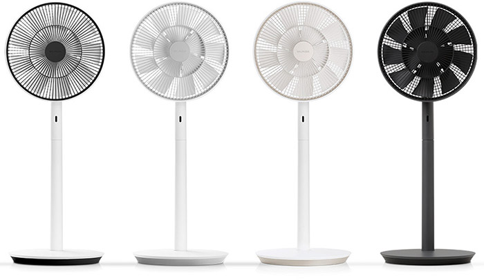
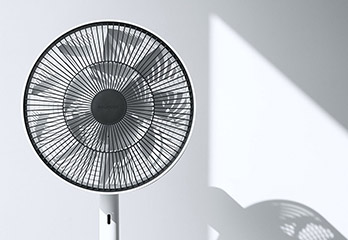
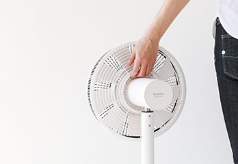
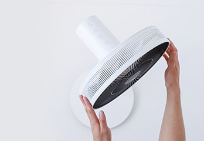
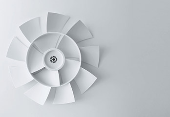

- 만들고 싶었던 '그'바람
-
GreenFan S 의 바람이 가장 기분 좋게
느껴지는 것은 누가 뭐라고 해도 낮잠을 자는 시간일 테지요.
소파와 얇은 담요, 그리고 GreenFan S만 있으면 우리는 그때,
그 여름에 불어왔던 기분 좋은 바람을 지금도 느낄 수 있습니다.
- 자연의 바람을 재현한 선풍기
- DC 모터 선풍기
GreenFan S는 발뮤다의 독자적인 기술로 자연의 바람을 재현한 선풍기입니다.
한여름 오후, 나무 그늘에서 불어오는 듯한 기분 좋은 바람을 실내에서도 그대로 느낄 수 있습니다.
GreenFan S의 기분 좋은 바람과 함께 멋진 여름을 보내시기 바랍니다.
-

기분 좋은 바람
발뮤다만의 독창적인 이중구조 날개는 공기를 자연의
바람처럼 넓게 퍼지게 하며 부드럽게 흐르도록 만듭니다.
일반 선풍기에 비해 약 4배 넓게 퍼져나가는 바람은
마치 자연 속에 있는 듯 기분 좋게 느껴집니다.
-

바람을 생활속으로
별매품 Battery&Dock을 장착하면 전원 플로그 없이 자유롭게 이동할 수 있는 무선 선풍기가 됩니다. 편리한 이동, 저소음, 회전 각도 조절 등. GreenFan S에는 생활에서 바람을 편리하게 활용하기 위한 다양한 노력이 담겨있습니다.
-

바람의 방향을 자유자재로
GreenFan S는 자유자재로 회전 각도를 설정할 수 있습니다. 더울 때는 회전 각도를 좁혀 집중적으로 바람을 보내고, 실내 전체를 순환시키고 싶을 때는 회전 각도를 넓게 설정합니다.
-
 방해하지 않는 조용함
압도적인 저소음을 실현한 GreenFan S. 풍량 1단계의 소음은 불과 13dB로, 이것은 나비 2마리의 날갯짓과 같습니다. 부드럽고 조용한 바람은 편안한 수면과 기분 좋은 아침을 만들어 줍니다. 책을 읽거나 집중이 필요한 작업 시에도 GreenFan S는 조용히 당신을 응원합니다.
방해하지 않는 조용함
압도적인 저소음을 실현한 GreenFan S. 풍량 1단계의 소음은 불과 13dB로, 이것은 나비 2마리의 날갯짓과 같습니다. 부드럽고 조용한 바람은 편안한 수면과 기분 좋은 아침을 만들어 줍니다. 책을 읽거나 집중이 필요한 작업 시에도 GreenFan S는 조용히 당신을 응원합니다.
-
놀라운 송풍 능력
넓게 퍼지는 풍부한 바람을 만들어내는 GreenFan S는 송풍 능력 또한 우수합니다. 15m 앞까지 바람을 내보낼 수 있어, 공기를 빠르게 환기 시키고 내부 온도 차를 맞춰주는 공기 순환기로 일 년 내내 활용할 수 있습니다.
-

새로운 이중 구조의 날개
날개 외측에 빠른 바람과 내측에 느린 바람을 동시에 만들어 풍속이 다른 두 바람을 서로 부딪치게 합니다. 바람이 서로 부딪치면서 선풍기 특유의 인공적인 바람은 사라지고, 넓게 퍼지며 부드럽게 이동하는 자연의 바람이 됩니다.